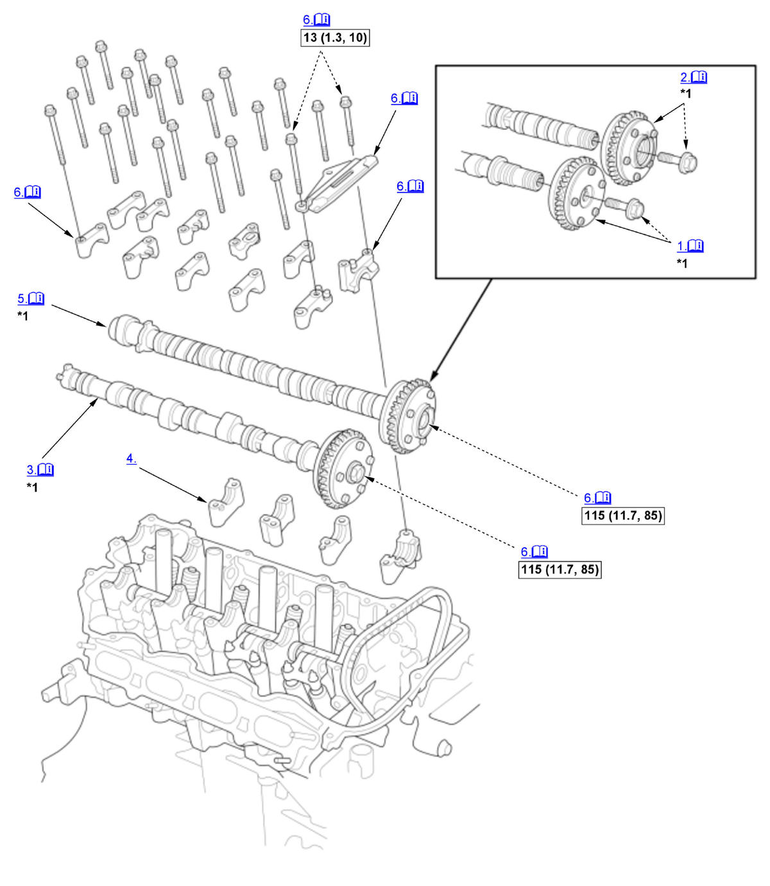
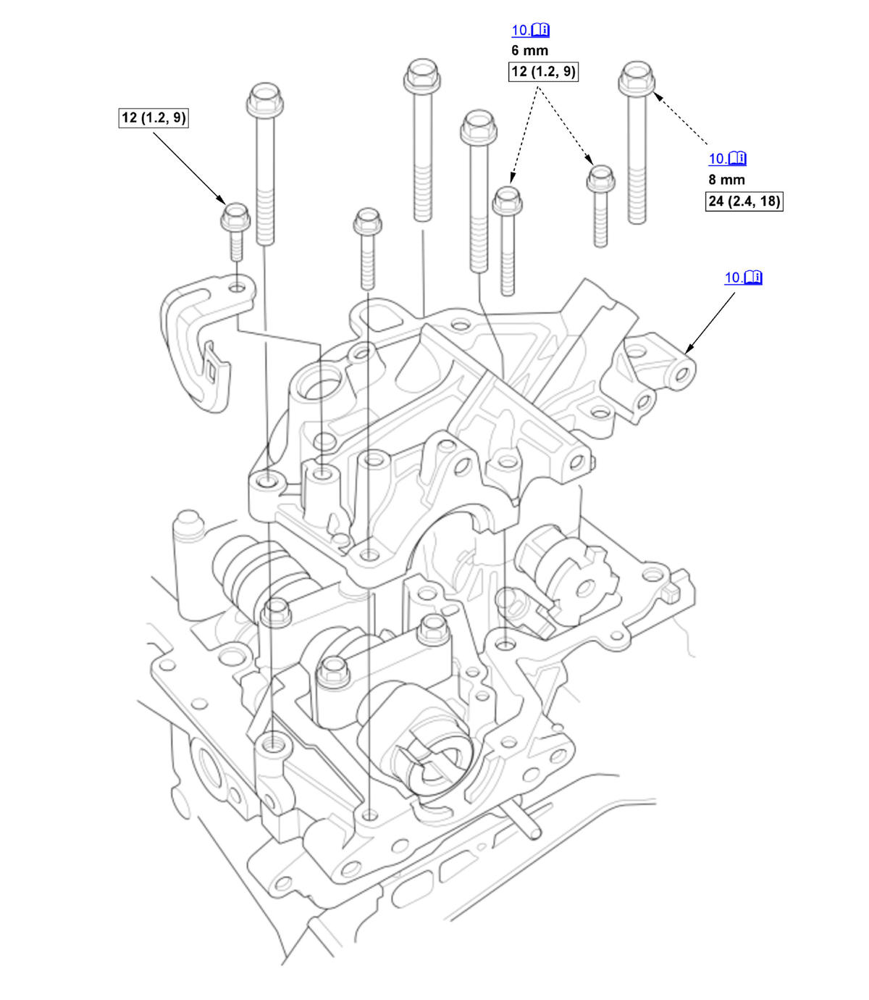
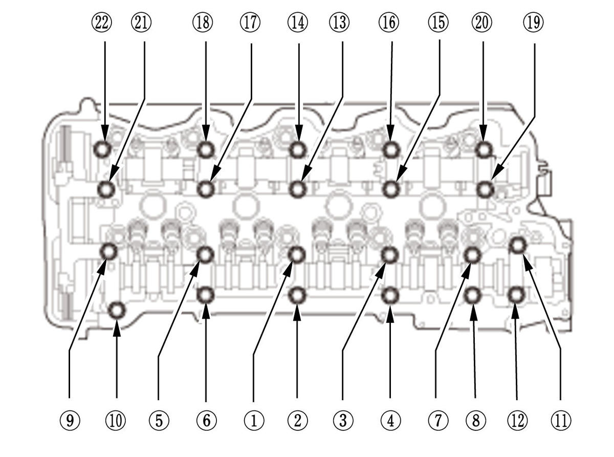
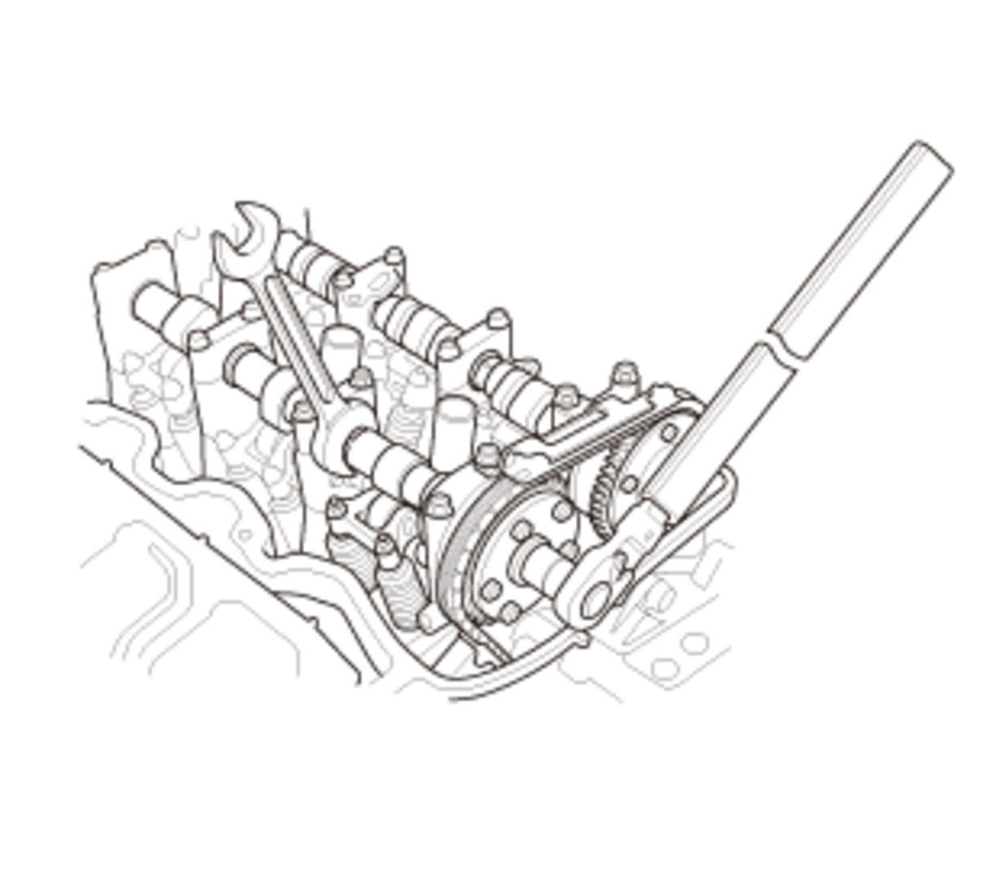
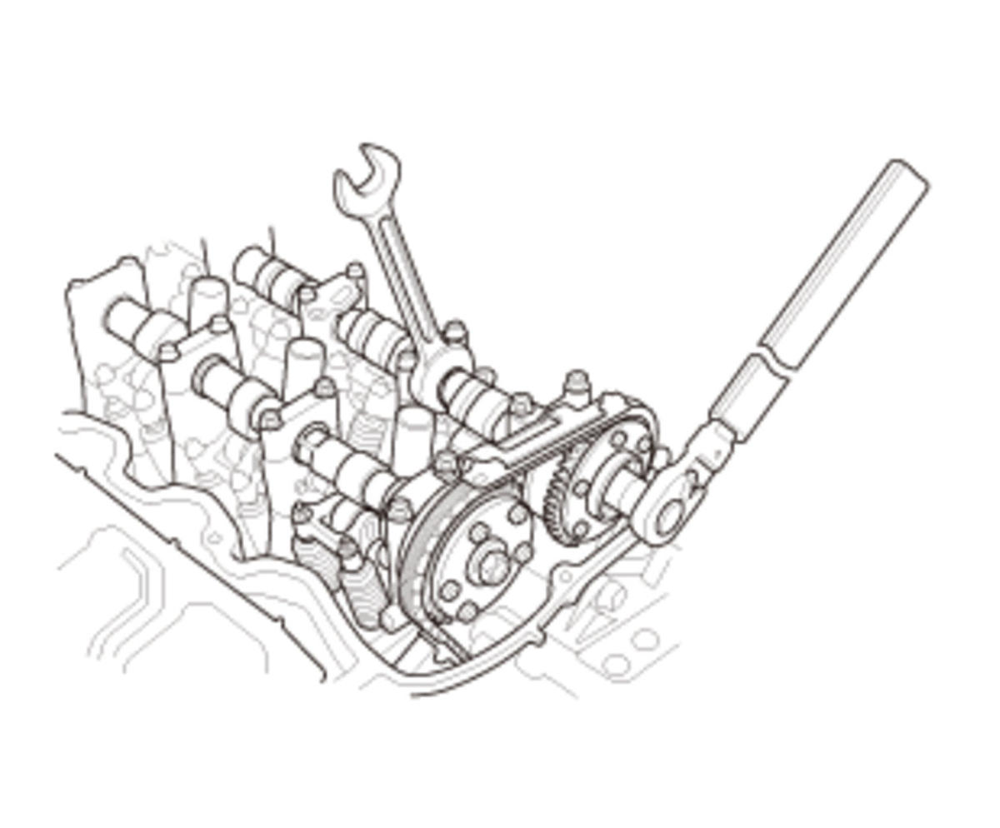

Camshaft and VTC Actuator Removal, Installation, and Inspection (K20C1) (2017 2018 2019 2020 2021): Installation: Procedure
Numbered call-outs in figure pertain to list numbers in following procedure.

Courtesy of HONDA, U.S.A., INC.| Detailed information, notes, and precautions | |
 |
Torque: N.m (kgf.m, lbf.ft) |
| *1 | These parts have inspection items. |
Numbered call-outs in figure pertain to list numbers in following procedure.

Courtesy of HONDA, U.S.A., INC. |
Detailed information, notes, and precautions |
|
Torque: N.m (kgf.m, lbf.ft) |
- VTC Actuator A - Install
NOTE: If removed VTC actuator A, do this procedure. 1. Install VTC actuator A.
2. Apply new engine oil to the threads of the VTC actuator A mounting bolt (B), then loosely install it.
- VTC Actuator B - Install
NOTE: If removed VTC actuator B, do this procedure. 1. Install VTC actuator B.
2. Apply new engine oil to the threads of the VTC actuator B mounting bolt (A), then loosely install it.
- Intake Camshaft - Install
1. Turn the crankshaft so its white mark (A) on the crankshaft pulley lines up with the pointer (B) on the cam chain case. 2. Install the intake camshaft.
- Lower Exhaust Camshaft Holder - Install
- Exhaust Camshaft - Install
1. Slide the exhaust camshaft in at an angle to allow the cam chain to slip over the teeth. 2. Set the No. 1 piston at top dead center (TDC). The "UP" mark (A) on VTC actuator B should be at the top. Align the TDC marks (B) on VTC actuator A and VTC actuator B. The TDC marks (C) on VTC actuator B should line up with the top edge of the cam chain case (D).
3. Apply new engine oil to the camshaft journals and the cam lobes on both camshafts.
- Cam Chain Guide B, Intake Camshaft Holder, and Upper Exhaust Camshaft Holder - Install



Courtesy of HONDA, U.S.A., INC.HONDA, U.S.A., INC.HONDA, U.S.A., INC.1. Apply new engine oil to the threads of the camshaft holder bolts. 2. Tighten the camshaft holder bolts, in sequence, to the specified torque.
3. If removed VTC actuator A, hold the intake camshaft with an open-end wrench, then tighten the VTC actuator A mounting bolt to the specified torque. 4. If removed VTC actuator B, hold the exhaust camshaft with an open-end wrench, then tighten the VTC actuator B mounting bolt to the specified torque. - Cam Chain Auto-Tensioner - Install
- Camshaft Timing - Check
- Valve Clearance - Adjust
- High Pressure Fuel Pump Base - Install
NOTE: Apply liquid gasket to the No. 5 rocker shaft holder mating surface of the high pressure fuel pump base and to the inside edge of the threaded bolt holes.
- CMP Sensor A and CMP Sensor B - Install
- Cylinder Head Cover - Install
- Vacuum Pump Holder - Install
- High Pressure Fuel Pump - Install
- Air Flow Tube A - Install
- Air Cleaner - Install
- Fuel Leak (Low Pressure Side) - Check
1. Turn the vehicle to the ON mode, but do not start the engine. After the fuel pump runs for about 2 seconds, the fuel line will be pressurizesd. Repeat this two or three times, then check for fuel leakage. - Fuel Leak (High Pressure Side) - Check
- Ignition Timing - Inspect